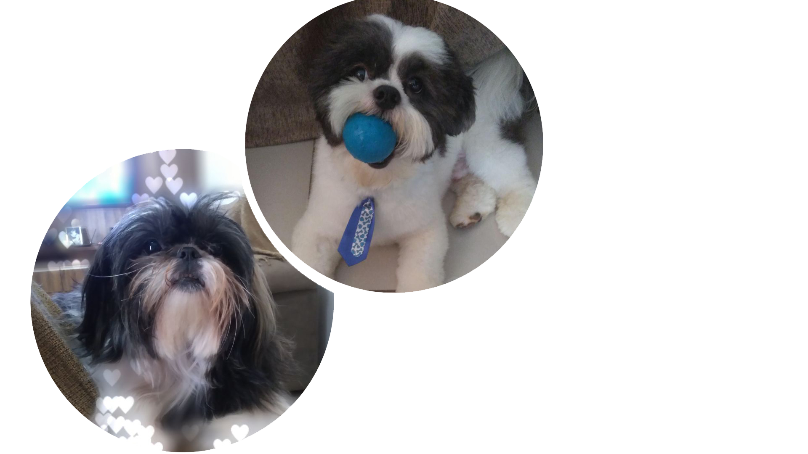
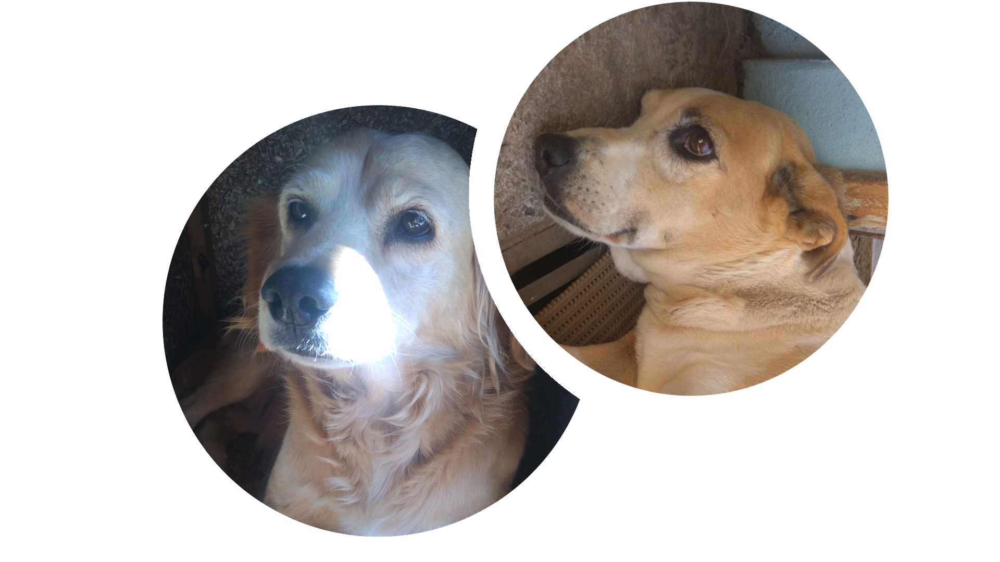

O que nosso Hospital te oferece?
🌟 Pronto atendimento rápido e de qualidade
🌟 Internação clínica e cirúrgica de alto padrão a um preço acessível!

🩺 Nossa fundadora e Veterinária Chefe 🩺
A DRA. Jessica Gomes foi formada pela Faculdade de Americana - FAM com honras ao mérito, possui especialização em Cirurgia Ortopédica e vasta experiência em atendimento clínico e cirúrgico a pequenos animais. Atualmente está se especializando em Dermatologia para que possa ajudar cada vez nossos AUmigos!
Assine um de nossos convenios!
- 🐶 Tatachila Alpha - 2 consultas / mês - 120$ + Tosa Completa
- 🐶 Tatachila Omega - 1 consulta / mês - 50$
Nossos AUmigos agradecem o carinho!
